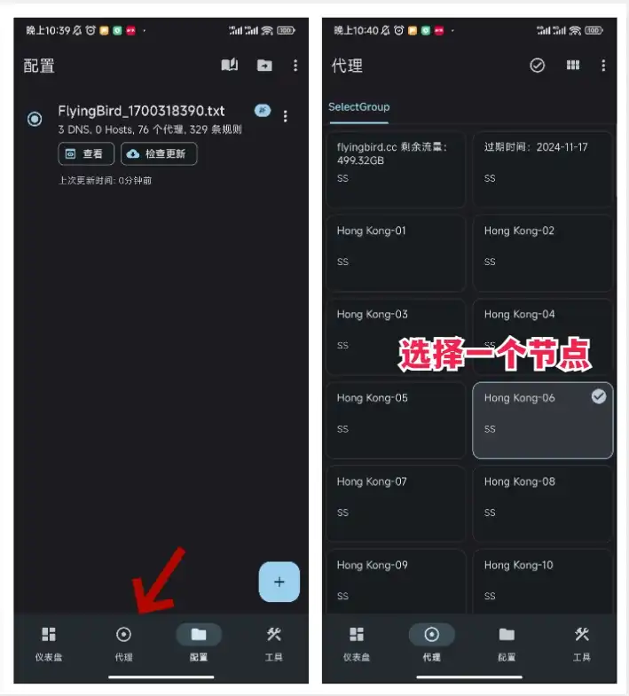
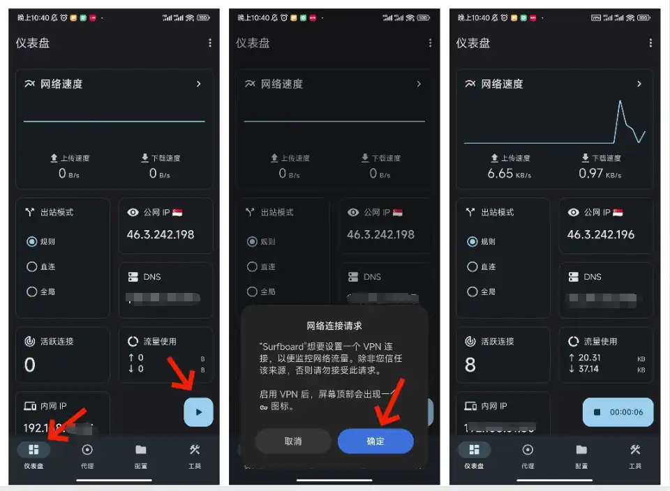

Surfboard 安装教程
步骤1: 下载 Surfboard 应用。
步骤2: 安装并打开应用,确保已购买或拥有机场订阅，没有点击前往参考
步骤3: 如图，打开Surfboard，导入订阅地址。点击加号之后，可以选择扫描二维码导入或者是从URL导入。

步骤4: 导入成功后，会显示出机场线路信息，代理数不是0就说明是有效的。每次开启的时候记得点击一下检查更新。此时任务栏会出现代理页。切换到代理，然后选择一个节点。
步骤5: 点击 仪表盘 → 点击三角按钮 → 点击确定 → 联网成功。此时已经可以访问了。
